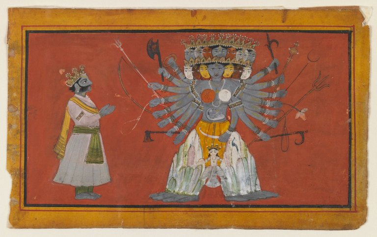

~3 minute read · home puja
कृष्ण जी का विश्वरूप
Krishna reveals the Vishwarupa
कुरुक्षेत्र के रथ पर सखा वह आकाश बन गए जिसमें सब लोक समाए।
On the chariot at Kurukshetra, a friend became the sky that held every world.

कथा · The story
अर्जुन जी का शोक आत्मा और कर्तव्य सुन चुका था। फिर भी उन्होंने रथी के सत्य का दर्शन माँगा। कृष्ण जी ने दिव्य दृष्टि दी। तब विश्वरूप दिखा — अनगिनत मुख–नेत्र, सूर्य–शस्त्र, देव और काल जो आने वाली सेनाओं को ग्रसे हुए। भय और विस्मय से अर्जुन काँपे; समझे युद्ध किसी विशाल व्यवस्था में पहले से समाया है। झुके, फिर सखा का सौम्य नर रूप माँगा — और पाया। दर्शन हिंसा का गुणगान नहीं; परिमित भय को अनंत सत्ता में रखता है — ताकि द्वेष बिना साहस लौटे।
Arjuna’s despair had already heard of the soul and of duty. Still he asked to see the truth behind his charioteer. Krishna granted divine sight. Then Arjuna beheld the Vishwarupa — countless faces and eyes, suns and weapons, gods and time itself devouring the armies that would fall. Terror and awe shook him; he saw that the war was already held within a larger order. He bowed, begged to see again the gentle human form of his friend, and received it. The vision does not glorify violence; it places finite fear inside infinite being — so courage can return without hatred.
विस्तृत कथा · Fuller telling
A longer retelling for readers who want more detail — optional; the short story above is enough for a quick home reading.
बांसुरी बिना भी कमरा नरम पड़ता है — कृष्ण कथाएँ उपदेश के बीच मुस्कुरा सकती हैं। यह “कृष्ण जी का विश्वरूप” का विस्तृत पथ है, उसी पंक्ति से जो परिवार रखता है: कुरुक्षेत्र के रथ पर सखा वह आकाश बन गए जिसमें सब लोक समाए। पहला चरण — मोड़ से पहले का संसार। अर्जुन जी का शोक आत्मा और कर्तव्य सुन चुका था। असाधारण कथा के भीतर सामान्य भय मत छोड़ो; श्रोता वहीं प्रवेश करता है। फिर गाँठ कसती है। फिर भी उन्होंने रथी के सत्य का दर्शन माँगा। कृष्ण जी ने दिव्य दृष्टि दी। तब विश्वरूप दिखा — अनगिनत मुख–नेत्र, सूर्य–शस्त्र, देव और काल जो आने वाली सेनाओं को ग्रसे हुए। भय और विस्मय से अर्जुन काँपे; समझे युद्ध किसी विशाल व्यवस्था में पहले से समाया है। झुके, फिर सखा का सौम्य नर रूप माँगा — और पाया। बुजुर्ग यहाँ स्वर धीमा करते ताकि बच्चे बचाव से पहले भार समझें। समाधान कीमत मिटा नहीं देता। दर्शन हिंसा का गुणगान नहीं; परिमित भय को अनंत सत्ता में रखता है — ताकि द्वेष बिना साहस लौटे। कीमत के साथ बैठो; सस्ती खुशी सिखाती कम, अर्जित शांति सिखाती अधिक। रीति इस स्मृति में क्या सुरक्षित रखती है: गीता जयंती और भगवद्गीता पाठ अध्याय ११ याद करते हैं — जब उपदेश दर्शन बना। यूट्यूब पर सर्वाधिक खोजी कृष्ण घड़ियों में। पढ़कर दीप जलाना नाटक नहीं — कल का कौन-सा साहस चुनना है, यह निश्चय है। घर के लिए: Read or hear Gita Chapter 11 once — then look at one hard duty with a wider sky behind it. यदि परिजन “कृष्ण जी का विश्वरूप” अलग कहें — अन्य नाम, अन्य क्रम — दोनों का सम्मान करो। पुराण, लोक और मंदिर कथाएँ भिन्न हो सकतीं। तीर्थयात्रा का लक्ष्य स्पष्ट द्विभाषी घर-पाठ है, शास्त्र की अदालत नहीं। एक बार धीरे पढ़ो। फिर यदि बच्चा हो तो ऊपर की संक्षिप्त कथा याद से सुनाओ — विस्तृत पाठ उन रातों के लिए जब घर चुप्पी का खर्च उठा सके।
Even without a flute, the room softens — Krishna stories are allowed to smile mid-sermon. Here is the fuller path of “Krishna reveals the Vishwarupa”, beginning from the line families keep: On the chariot at Kurukshetra, a friend became the sky that held every world. First movement — the world as it stands before the turning point. Arjuna’s despair had already heard of the soul and of duty. Do not skip the ordinary fear inside the extraordinary frame; that is where the listener enters. Then the knot tightens. Still he asked to see the truth behind his charioteer. Krishna granted divine sight. Then Arjuna beheld the Vishwarupa — countless faces and eyes, suns and weapons, gods and time itself devouring the armies that would fall. Terror and awe shook him; he saw that the war was already held within a larger order. He bowed, begged to see again the gentle human form of his friend, and received it. Elders slow their voice here so children feel the weight before the rescue. Resolution does not erase the cost. The vision does not glorify violence; it places finite fear inside infinite being — so courage can return without hatred. Sit with the cost a moment; cheap happy endings teach less than earned peace. What the ritual protects in this memory: Gita Jayanti and Bhagavad Gita path remember Chapter 11 — when teaching became vision. One of the most searched Krishna moments on YouTube worldwide. When you light a lamp after reading, you are not reenacting theatre — you are choosing which courage to practise tomorrow. For the household: Read or hear Gita Chapter 11 once — then look at one hard duty with a wider sky behind it. If relatives tell “Krishna reveals the Vishwarupa” differently — other names, other sequences — receive both with respect. Puranic, folk, and temple tellings can diverge without making either ‘fake’. TirthaYatra’s aim is a clear bilingual home reading, not a courtroom of scripture. Read slowly once. Then, if a child is present, tell only the short version above from memory — the fuller telling is for nights when the house can afford silence.
क्यों · Why this ritual
गीता जयंती और भगवद्गीता पाठ अध्याय ११ याद करते हैं — जब उपदेश दर्शन बना। यूट्यूब पर सर्वाधिक खोजी कृष्ण घड़ियों में।
Gita Jayanti and Bhagavad Gita path remember Chapter 11 — when teaching became vision. One of the most searched Krishna moments on YouTube worldwide.
Takeaway for home
Read or hear Gita Chapter 11 once — then look at one hard duty with a wider sky behind it.
Continue · आगे पढ़ें
Common questions · सामान्य प्रश्न
कृष्ण जी का विश्वरूप
अर्जुन जी का शोक आत्मा और कर्तव्य सुन चुका था। फिर भी उन्होंने रथी के सत्य का दर्शन माँगा। कृष्ण जी ने दिव्य दृष्टि दी। तब विश्वरूप दिखा — अनगिनत मुख–नेत्र, सूर्य–शस्त्र, देव और काल जो आने वाली सेनाओं को ग्रसे हुए। भय और विस्मय से अर्जुन काँपे; समझे युद्ध किसी विशाल व्यवस्था में पहले से समाया है। झुके, फिर सखा का सौम्…
Krishna reveals the Vishwarupa
Arjuna’s despair had already heard of the soul and of duty. Still he asked to see the truth behind his charioteer. Krishna granted divine sight. Then Arjuna beheld the Vishwarupa — countless faces and eyes, suns and weapons, gods and time itself devouring the armies that would fall. Terror and awe shook him; he saw th…
क्यों यह रीति / Why this ritual?
गीता जयंती और भगवद्गीता पाठ अध्याय ११ याद करते हैं — जब उपदेश दर्शन बना। यूट्यूब पर सर्वाधिक खोजी कृष्ण घड़ियों में।
घर के लिए takeaway?
Read or hear Gita Chapter 11 once — then look at one hard duty with a wider sky behind it.
Feedback · सुधार
Help us validate this page: suggest a correction, add a detail, or highlight something useful for home puja readers.
Feedback is emailed to TirthaYatra for editorial review. It is not published live automatically (safer for quality and ads policy). You can also keep a personal copy on this device.